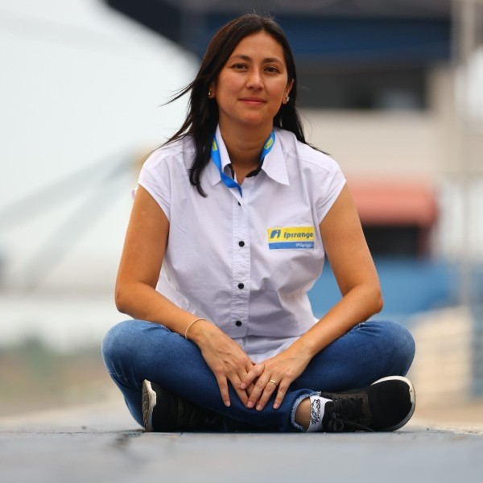

Foto: Linkedin Rachel
Raquel, em primeiro lugar quero te agradecer a oportunidade, você é uma inspiração para as apaixonadas por motorsport e pelo automobilismo nacional, mas principalmente você mostra para todas nós, que sim, dá pra chegar lá.
Eu tive a honra de participar da imersão com a AMattheis, mas muitas(os) não tiveram a oportunidade então conta pra gente um pouco de como foi o começo na equipe.
Meu começo na AMattheis foi em 2016, enquanto eles ainda carregavam a bandeira da Redbull. O Andreas me contratou pra ser umas das engenheiras de performance da equipe e foi um grande marco na minha carreira, entrar para uma equipe top do automobilismo nacional. Naquele ano a gente estreou com a corrida de convidados, mas a segunda foi uma corrida "normal" e naquele final de semana a gente fez a Pole e fechou a com dobradinha, P1 e P2, foi uma grande honra pra mim fazer parte daquele resultado. Aquela foi a primeira vez que subi em um pódio e isso foi uma decisão do Andreas, ele fez questão que fosse eu naquele momento.
Agora você é uma dos membros da CFA, como surgiu o convite e quais os planos para a confederação?
Eu sempre tive uma colaboração bem ativa com a CBA (Confederação Brasileira de Automobilismo) e sempre me dei muito bem com os comissários técnicos e desportivos. Trabalhei como voluntária para a FIA no GP do BR, desde quando a CBA estava envolvida. Ano passado fui seleciona para programa da FIA Woman de intercâmbio para trabalhar no GP de Singapura, com apoio de CBA. Tenho um relacionamento de longa data com a Bia Figueredo, Presidente da CFA (Confederação Feminina de Automobilismo), e ela já sabia do meu ativismo no motorsport para engajamento de mulheres no automobilismo, então o convite veio de forma orgânica. Eu já era uma pessoa ativa fazendo o que uma pessoa da CFA tinha que fazer, então o convite encaixou como uma luva e o objetivo agora é liderar projetos para promover um maior engajamento das mulheres no automobilismo.
Além de engenheira de pista na AMattheis, esse ano também será chefe de equipe da ASG Motorsport, na Copa Truck, como você está encarando esse novo desafio?
Esse ano a oportunidade na Copa Truck vem como um novo desafio na minha carreira, não só pela grande mudança que é a competição de caminhões, que é bem diferente da Stock Car em vários sentidos, principalmente pela questão da equipe ter mais de dois veículos, mais de quatro até, porque são sete caminhões. Então vai ser um desafio imenso, um verdadeiro teste pra mim, para explorar os meus limites. Eu estou super animada, muito feliz, a equipe é muito boa, os pilotos são muito bons, então acredito que eu venho para somar.
Você também é mãe, a Alice já se interessa pelo seu trabalho e por automobilismo em geral? E mais que isso, ela já entende as suas viagens, seu tempo fora?
A minha filha vai fazer agora, 26 de março, 9 anos de idade, eu já fico até meio consciente de falar que eu tenho uma filha de quase 10 anos, como o tempo passa. Eu crio ela como uma feminista de carteirinha desde pequenininha, sempre ensinando para ela que ela pode ser o que ela quiser, gostar do que ela quiser, brincar com o que ela quiser e eu sinto que ela absorveu isso muito bem. O interesse dela por automobilismo ainda é muito pequeno, ela entende que é o meu trabalho, a minha paixão, a alguns anos atras ela falava que queria ser dona de posto de gasolina, o que eu achei interessantíssimo (espero que seja Ipiranga, hein Alice). O que eu mais gosto é que ela absorve de mim essa questão da luta das mulheres pelo direto de ser e fazer o que quiser e isso me enche de orgulho.
E a Rachel me contou uma história linda da Alice que não posso deixar de compartilhar. Confesso, que como mãe foi algo que me emocionou muito na nossa entrevista!
Ano passado quando tiveram as enchentes, eu coloquei ela para trabalhar como voluntária, recolhendo e separando doações. E eu lembro que um dia uma voluntária perguntou se ela queria ajudar e ela falou que sim, foi pedido para ela separar os brinquedos de menino e de menina e ela respondeu que não podia fazer isso porque isso não existe, os meninos e as meninas podem brincar do que eles quiserem, menino pode brincar de boneca e menina pode brincar de carrinho. E eu lembro que essa voluntária ficou meio chocada e veio me procurar para falar sobre o que tinha acontecido e eu expliquei que quando estiver falando com a minha filha você tem que buscar outros ângulos de comunicação, você pode pedir pra ela separar os bichinhos de pelúcia, bonecas e carrinhos, mas não dar gênero para coisas, cores e brinquedos. -Me diz se a Alice não é a Melhor Pessoa!
São anos de automobilismo, anos de Stock, mas em algum momento já percebeu que te tratavam diferente por ser mulher? Tenho certeza que hoje, você já mostrou toda sua competência, tudo que você é e pode, mas em algum momento, principalmente no começo, você sentiu algo?
Olha ao longo da minha trajetória tive muitas experiências, algumas boas, algumas ruins pelo falo de ser mulher, todos aqueles memes clássicos da diferença de gênero, de como trata quando é uma mulher e quando é um homem. No começo da minha carreira as pessoas ficavam muito surpresas quando eu falava que era engenheira de uma equipe e que hoje já não tem mais isso, graças a Deus os tempos mudaram e muita coisa já melhorou bastante. Sempre teve um lado bom, recebi muita ajuda, um pessoal muito respeitoso, então teve um pouquinho de lado bom e um pouquinho de lado ruim.
Qual é a sensação de saber, que sim, você é inspiração para muitas mulheres?
Eu fico muito emocionada de ser inspiração pras mulheres e feliz em estar podendo inspirar e motivar cada vez mais mulheres a virem trabalhar com seus sonhos e que seu sonhos sejam o esporte a motor. Eu sou muito empenhada em aumentar a representatividade feminina no automobilismo e para isso eu preciso que meninas sonhem em trabalhar com automobilismo e não tenham medo de correr atrás desse sonho, porque tem mercado e elas são mais do que capacitadas.
E pra finalizar, quero te pedir para deixar um recado para todas as mulheres que estão buscando seu espaço, seja no automobilismo ou em outra área de maioria masculina.
Para essa mulherada que esta buscando seu espaço o meu conselho é correr atrás, não desistam, não desistam nunca de realizar o sonho de vocês, se é isso que vocês querem tenham perseverança, utilizem todas as experiencias ruins, os obstáculos, transformem tudo isso em combustível para ajudar vocês a superarem tudo, desenvolver a resiliência que é muito necessária para quem trabalha com automobilismo e até para quem vai atuar em ambientes extremamente masculinos. E contem comigo, as minhas portas estão sempre abertas e o que eu puder fazer para ajudar todas as mulheres eu vou fazer!
P.S.: Eu acabei de editar essa entrevista e estou com lágrimas nos olhos de emoção.
Eu sou sou grata por isso, a Rachel está no rol das mulheres que mais me inspiram nesse mundo!